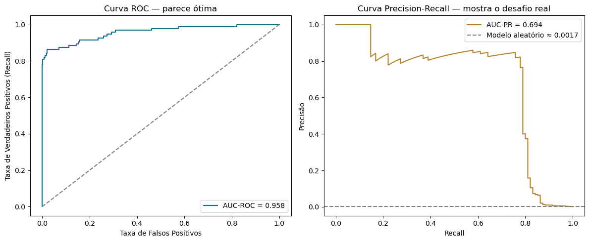
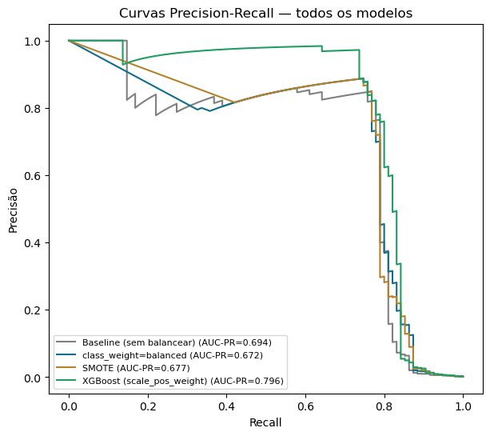

Detecção de fraude é o caso mais extremo de desbalanceamento que existe em classificação — normalmente bem menos de 1% das transações são fraude. Isso quebra a régua "padrão" de avaliação de modelo, e o mercado desenvolveu práticas próprias pra lidar com isso.
O que é AUC-PR
Mesmo princípio da curva ROC, só que trocando os eixos: em vez de Taxa de Falso Positivo x
Taxa de Verdadeiro Positivo, a curva Precision-Recall plota Recall (x) contra
Precisão (y), variando o limiar de decisão. A área embaixo dessa curva é o
AUC-PR — no scikit-learn, a função é average_precision_score.
A diferença que importa: na ROC, um modelo aleatório sempre dá AUC ≈ 0,5, não importa o desbalanceamento. No PR, o "nível do chute aleatório" é a proporção de positivos na base. Com 0,17% de fraude, um modelo que não aprendeu nada teria AUC-PR ≈ 0,0017 — bem diferente do 0,5 fixo da ROC.
Por que a ROC engana em desbalanceamento extremo
A Taxa de Falso Positivo (eixo x da ROC) tem no denominador o número de
verdadeiros negativos. Com dezenas de milhares de transações legítimas, até
um volume grande de falsos positivos em número absoluto vira uma fração minúscula — a curva
ROC fica artificialmente bonita. A precisão não sofre dessa diluição: é
VP / (VP + FP) direto, sem o TN no meio.
Isso não é só um argumento intuitivo — é literalmente o tema de um paper de referência na área: Saito & Rehmsmeier (2015), publicado na PLOS ONE, mostra formalmente que a curva Precision-Recall é mais informativa que a ROC especificamente ao avaliar classificadores binários em datasets desbalanceados (DOI: 10.1371/journal.pone.0118432).


O que o mercado realmente usa
Não é só uma métrica de ML isolada — a indústria de detecção de fraude combina várias camadas de avaliação:
- PR-AUC como métrica de comparação entre modelos — é o que a literatura técnica recomenda especificamente pra fraude, não é escolha nossa isolada.
- Recall a um FPR fixo — "quantas fraudes eu pego mantendo só X% de falso positivo?" — métrica operacional, porque toda equipe de fraude tem capacidade limitada de revisar alertas por dia.
- Métrica de negócio direta — valor de fraude evitado vs custo de revisar falsos positivos (cada alerta falso custa tempo de analista e atrito com cliente legítimo).
- Múltiplos limiares de risco, não um corte só — faixas de "bloqueia automático", "manda pra revisão manual", "libera".
"Modelo bom" não tem número universal
Não existe "PR-AUC de 0,8 é bom" fora de contexto — depende muito da taxa base de fraude do negócio (cartão de crédito, e-commerce, seguro, cada um tem taxa e custo de erro diferente). É a mesma lição do AUC/Gini de crédito: o benchmark é relativo ao mercado específico, não uma régua fixa universal.
SMOTE: usado sim, mas com ressalvas reais
É prática comum na indústria, com bastante literatura aplicada usando — mas com dois cuidados que valem saber antes de citar numa entrevista:
RandomUnderSampler (reduzir a classe
majoritária em vez de gerar sintéticos da minoritária) — mais rápido, mas perde dado real.
Erro clássico: aplicar SMOTE antes do split treino/teste — isso vaza informação sintética pro conjunto de teste e infla os resultados de forma artificial. O jeito certo é aplicar só depois do split, e só no treino. Esse erro aparece com frequência o suficiente pra valer a pena mencionar que você sabe evitá-lo.
Bônus: além do notebook
Produção real de detecção de fraude roda em tempo real — milissegundos por transação, via streaming (ex: Kafka), não em lote como um notebook. É uma camada de engenharia que um projeto de portfólio não cobre sozinho, mas vale saber que existe, caso perguntem "e como isso rodaria em produção?".
Resumindo
| Prática | O que é | Por quê |
|---|---|---|
| AUC-PR | Métrica principal de comparação | Não infla com desbalanceamento extremo |
| Recall @ FPR fixo | Métrica operacional | Respeita a capacidade real da equipe de revisão |
| SMOTE só no treino | Regra de higiene de dado | Evita vazamento pro teste |
| Múltiplos limiares | Estratégia de decisão | Nem toda transação de risco merece a mesma ação |
O padrão se repete: a métrica "certa" depende do formato do problema (aqui, o desbalanceamento extremo), e a prática de mercado geralmente já resolveu essa pergunta antes — vale pesquisar o que a indústria específica usa antes de aplicar a métrica "padrão" de livro-texto sem questionar.
Fontes
- Saito & Rehmsmeier (2015) — The Precision-Recall Plot Is More Informative than the ROC Plot When Evaluating Binary Classifiers on Imbalanced Datasets, PLOS ONE
- Reproducible Machine Learning for Credit Card Fraud Detection — Practical Handbook
- Understanding Model Evaluation Metrics in Fraud Detection: Beyond Accuracy